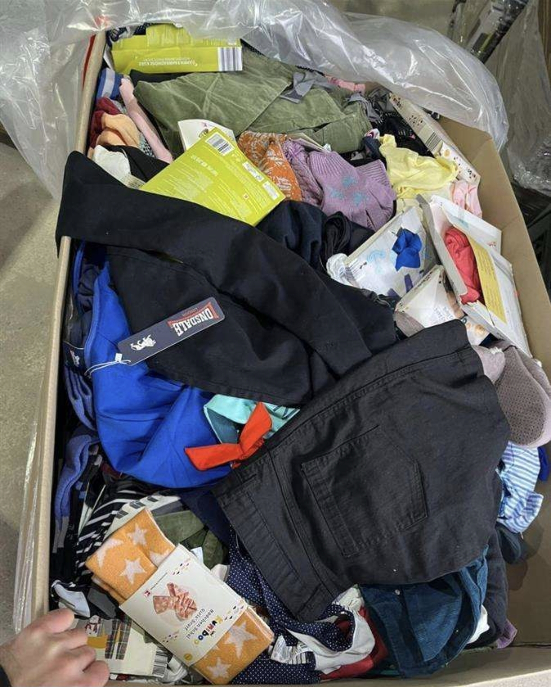

Votre expert en rachat de lots et liquidations de magasins en France
Basé à Lyon, France Soldeur est votre partenaire de confiance pour le rachat de lots de marchandises et la liquidation de magasins dans toute la France, avec des interventions à Paris, Marseille, Toulouse, Nice, Bordeaux, Lille, Strasbourg, Nantes, Rennes, Montpellier, Grenoble, Dijon, Rouen, Aix-en-Provence, Toulon, Reims, Le Havre, Clermont-Ferrand, Saint-Étienne, Angers, Nîmes, Villeurbanne, Metz, et bien d’autres villes. Nous sommes spécialisés dans le déstockage de vêtements, chaussures, sous-vêtements, et autres produits invendus, offrant des solutions rapides et efficaces pour les commerçants, grossistes, et entreprises en liquidation.
Notre équipe de professionnels évalue vos stocks avec précision et propose un paiement rapide par chèque, virement bancaire, ou espèce. Que ce soit pour une liquidation judiciaire, un surplus de vêtements à Lyon, un déstockage de chaussures à Paris, ou une liquidation de magasin à Marseille, nous intervenons partout en France pour transformer vos stocks invendus en liquidités. Demandez une estimation gratuite pour découvrir nos services de rachat de lots adaptés à vos besoins !
 Demander une estimation gratuite✉️ francesoldeur@gmail.com
üìû 07 75 81 64 58
Horaires :
7 jours sur 7 : 9h00 – 19h00
Pour tous vos projets de rachat de lots ou de liquidation de magasins à Lyon, Paris, Marseille, Toulouse, Nice, Bordeaux, Lille, Strasbourg, Nantes, Rennes, Montpellier, Grenoble, Dijon, Rouen, Aix-en-Provence, Toulon, Reims, Le Havre, Clermont-Ferrand, Saint-Étienne, Angers, Nîmes, Villeurbanne, Metz, ou ailleurs en France, contactez France Soldeur dès aujourd’hui pour une estimation gratuite et un paiement rapide par chèque, virement bancaire, ou espèce.